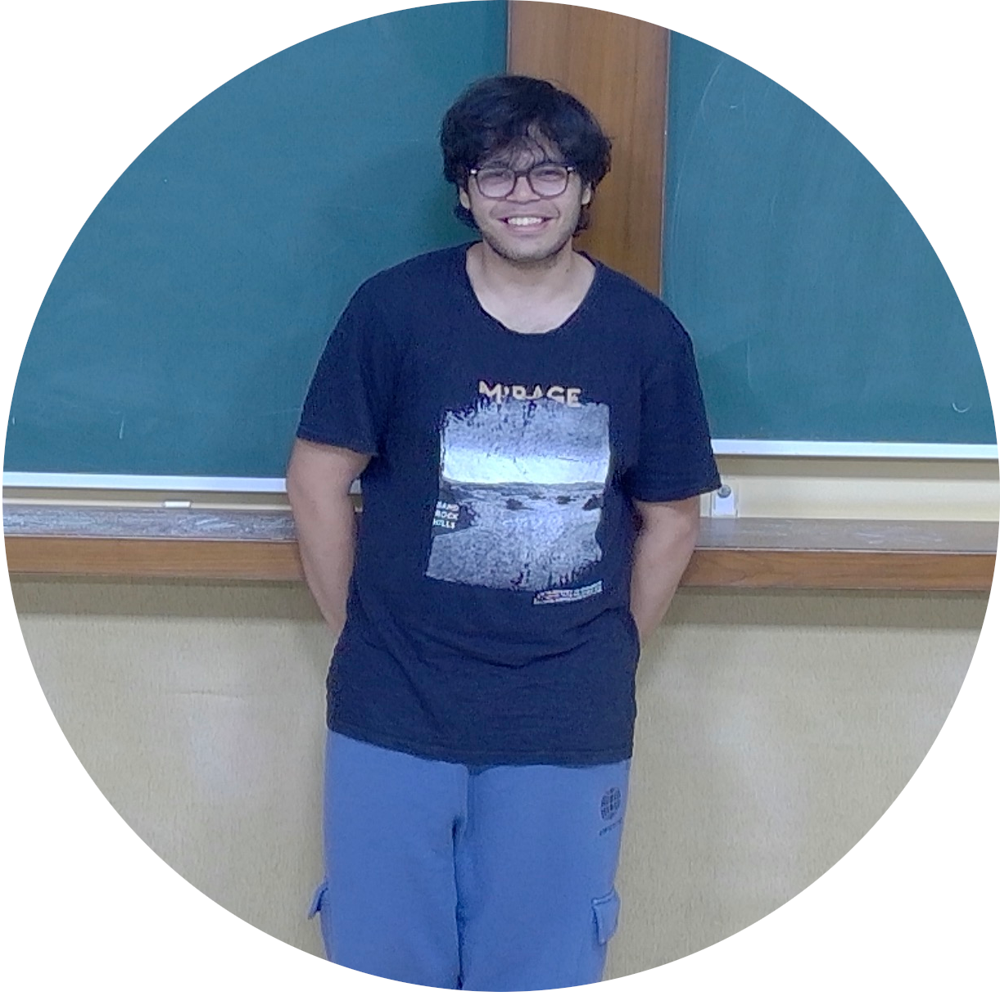

Dhairya Baxi
Postgraduate Student • HiCAPS Lab (Prof. Uday Bondhugula)
Department of Computer Science and Automation
Indian Institute of Science, Bangalore
_____________________________________
I am an M.Tech student in Computer Science and Automation at IISc, currently working at the HiCAPS Lab under Prof. Uday Bondhugula. My primary interest lies in AI compilers. I enjoy working on compiler optimization and polyhedral compilation for modern hardware. I’m also broadly interested in mathematics and theoretical computer science.
Outside of coursework and research, I have co-founded the Recreational Mathematics Club (RMC) at IISc.
Indian Institute of Science, Bangalore
Master of Technology · Computer Science and Engineering (2025 – Present)
Department of Computer Science and Automation
Institute of Technology, Nirma University
Bachelor of Technology · Computer Science and Engineering (2021 – 2025)
Polymage Labs
AI Compiler Intern · May 2026 – July 2026
Bengaluru, Karnataka, India
Skills: MLIR, C++, GPUs, Performance Analysis
Scalable Compilers for Heterogeneous Architectures Group, IIT
Hyderabad
Research Intern · December 2024 – August 2025
Hyderabad, Telangana, India
Skills: C++, MLIR, torch-mlir, ISL, Barvinok
TuskerAI
Summer Research Intern · April 2024 – July 2024
Ahmedabad, Gujarat, India
Skills: Qiskit, PyTorch, Python, Matplotlib
PolyUFC: Polyhedral Compilation Meets Roofline Analysis for Uncore
Frequency Capping
Nilesh Rajendra Shah, M V V S Manoj Kumar, Dhairya Baxi, and Ramakrishna
Upadrasta
2026 IEEE/ACM International Symposium on Code Generation and Optimization
(CGO)
Google Scholar ⋅ PDF
Polyqsim · GitHub
QASM2 to MLIR Affine for statevector quantum circuit simulation
Polyqsim is a tool that translates QASM2 quantum assembly code into the MLIR Affine dialect, enabling integration of quantum programs into MLIR polyhedral optimization infrastructure for efficient statevector simulation.
FianchettoAD · GitHub
Automatic Differentiation
FianchettoAD is a programming language that supports automatic differentiation (autodiff) out of the box. With FianchettoAD, you can easily compute derivatives of functions without having to implement differentiation manually. The language is currently under development and is incomplete.
Math visualizers in HTML5 canvas
| baxivishal@iisc.ac.in | |
| GitHub | github.com/Baxi-codes |
| linkedin.com/in/dhairya-baxi-38908a1b9/ | |
| Google Scholar | scholar.google.com/citations?user=TM4x-mwAAAAJ |
__________________________________________________________________________
Made with mk4ht